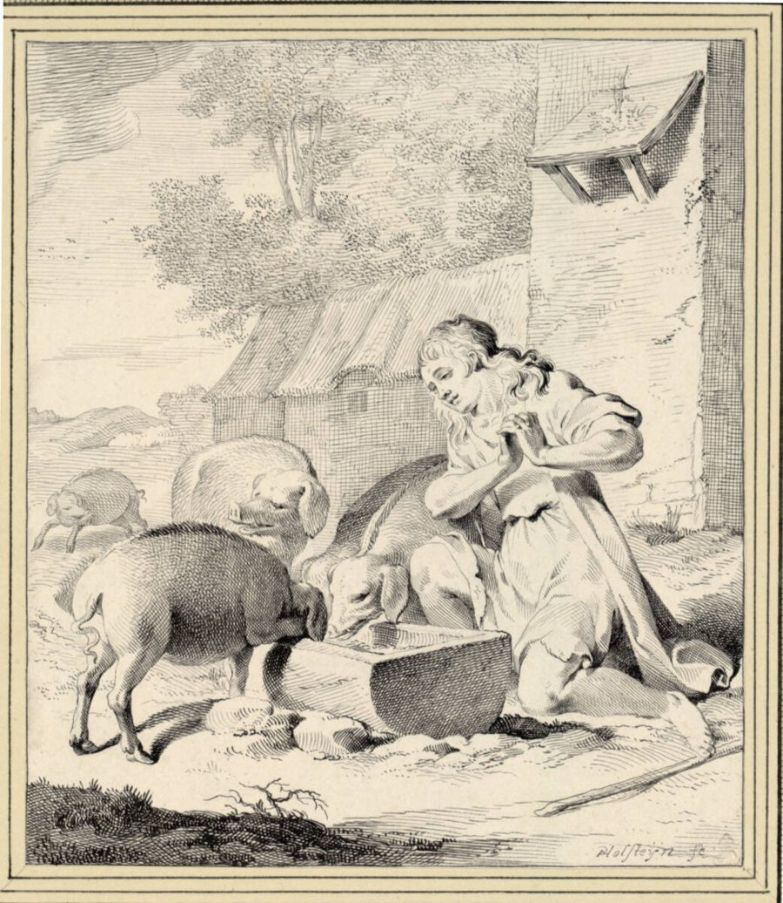

- When
- TBD
- Where
- TBD, TU Berlin
- How often
- TBD, depending on interest
- Mailing list
- TBD
Upcoming talks
{%- assign n = 0 -%} {%- for talk in talks -%} {%- assign d = talk.date | date: "%Y%m%d" | plus: 0 -%} {%- if talk.date == nil or d >= today -%} {%- assign n = n | plus: 1 -%} {% include slop-talk.html talk=talk %} {%- endif -%} {%- endfor -%} {%- if n == 0 %}No talks scheduled at the moment. Why not give one?
{%- endif %}Past talks
{%- assign n = 0 -%} {%- assign past = talks | reverse -%} {%- for talk in past -%} {%- if talk.date -%} {%- assign d = talk.date | date: "%Y%m%d" | plus: 0 -%} {%- if d < today -%} {%- assign n = n | plus: 1 -%} {% include slop-talk.html talk=talk %} {%- endif -%} {%- endif -%} {%- endfor -%} {%- if n == 0 %}None yet.
{%- endif %}About

Given the ongoing onslaught of important results being proven by LLMs, we want a space for those of us who care about the results to discuss and digest them, and to talk about how to deal with this. It seems a shame to let the new and amazing ideas get lost in the tidal wave.
There are many philosophy-focused AI & maths seminars, and we both love them and recognise their importance. By contrast, the goal of this seminar is practical. Beyond individual results, we want to make room for discussion: how refereeing, teaching, supervision and our own research should adapt, taking first steps towards self-hosting open-weight LLMs, and how we, as a community, are going to react to all of this.
Give a talk
We invite contributed talks from anyone – students, postdocs, faculty, practitioners. Informal formats are very welcome. A session might be:
- Dissection – a careful look at a single claim: what was asserted, what was actually proved, and what is new.
- Survey – a broader view of AI output in a subject area.
- Discussion – a discussion-led session.
- Workshop – a hands-on session.
To propose a talk, or if you have a candidate piece of slop you’d like someone to look at, write to the organisers with a link to the claim and a line or two on why it is interesting.
Contact
If you would like to take part, give a talk, or suggest something for us to look at, get in touch with the organisers:
- Rosa Preiss (TU Berlin) – preiss@math.tu-berlin.de
- Dominic Bunnett (TU Berlin) – bunnett@math.tu-berlin.de